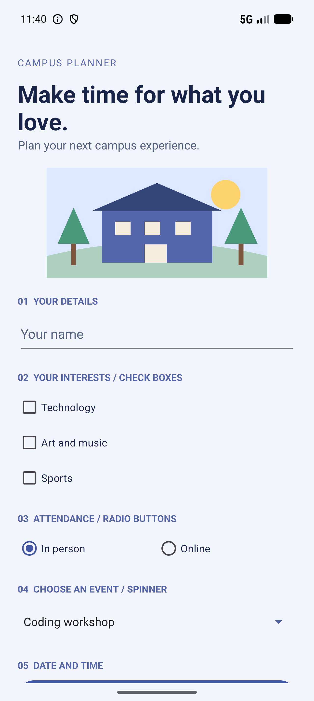
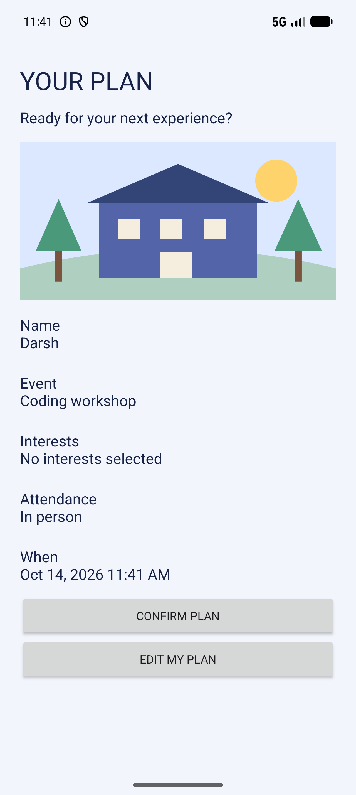
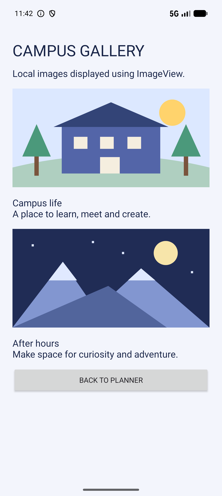

Campus Planner is a Java Android application that brings your next campus experience together in three screens. Choose your interests, pick an event, and preview your plan.
Android 7.0 or later. Debug build for coursework demonstration.
Plan your experience

Preview your plan

Explore the gallery

Every required component, included.
EditText for your name and CheckBoxes for interests.
RadioButtons for attendance and a Spinner for event selection.
DatePickerDialog and TimePickerDialog for scheduling.
A touch listener with live coordinates and Toast feedback.
Scrollable screen layouts, ImageViews and navigation between three activities.
Try it on Android
Download the APK to an Android device or emulator.
Open the downloaded file and allow installation from that source if Android asks.
Open MAD assignment, enter a name, and choose your options.
Use both pickers, tap or drag the touch pad, then preview the plan.
Open the image gallery to see the third screen.
This website presents the Android app and its download. The native app runs on Android. Confirmation is a local demonstration; it does not book or save an event.